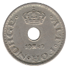
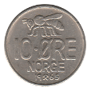
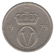

Ten Øre
Oscar II / Haakon VII (1875-1903)
Haakon VII (1909-1923)
Haakon VII (1924-1951)
1924
 1925
1925
1926
1937
1940
1941
1946
1948
 1949
Fourth Series
1942
Haakon VII (1951-1957)
1952
1953
1954
1955
1956
1957
Olav V (1958-1973)
1961
1962
1963
1964
 1965
1967
1968
1969
Olav V (1974-1991)
1974 AB
1975 AB
1976 AB
1978 AB
 1979 AB
1981 K
1984 K
1985 K
1986 K
1987 K
1988 K
1989 K
Back to Norway
Back to Home